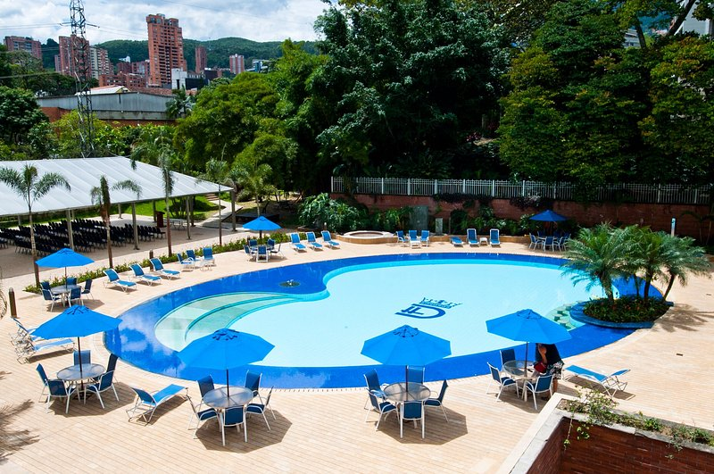
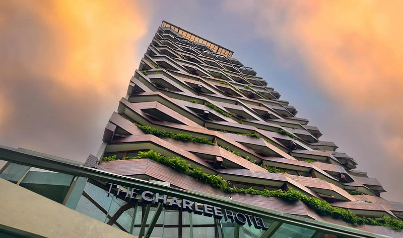
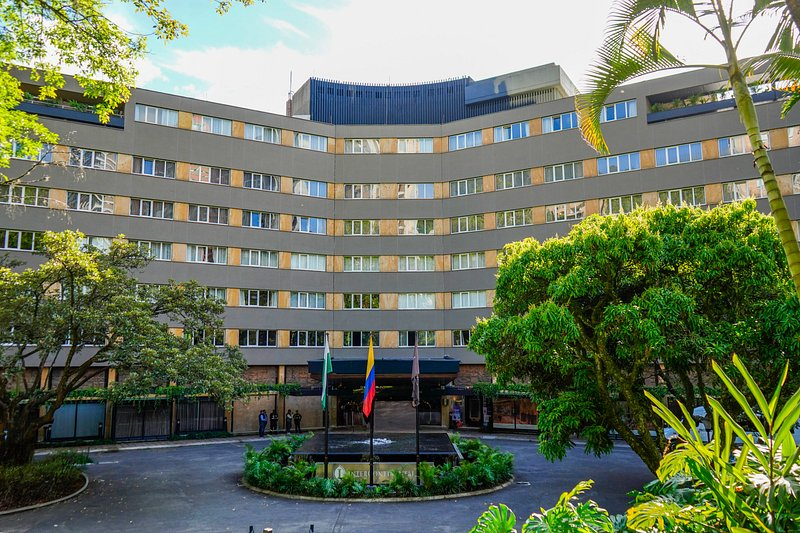
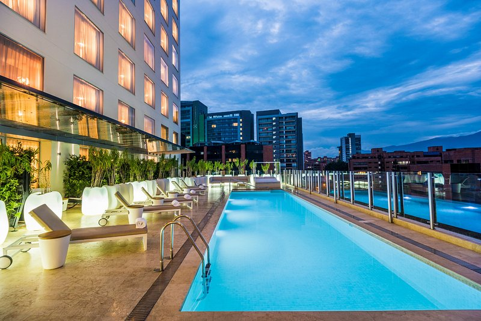
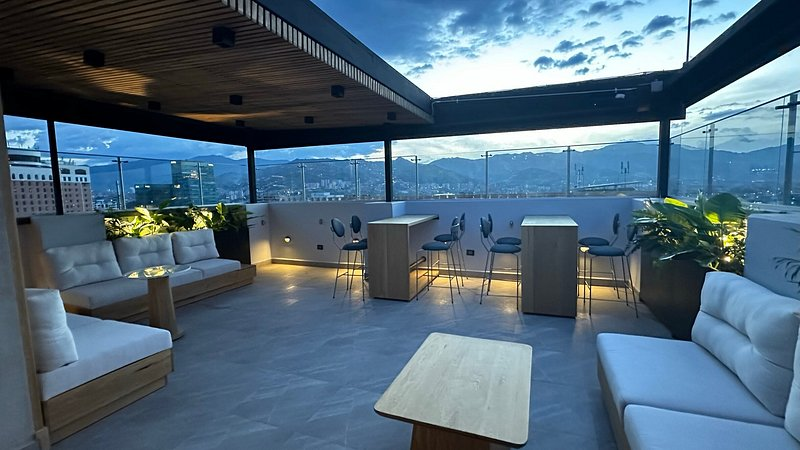
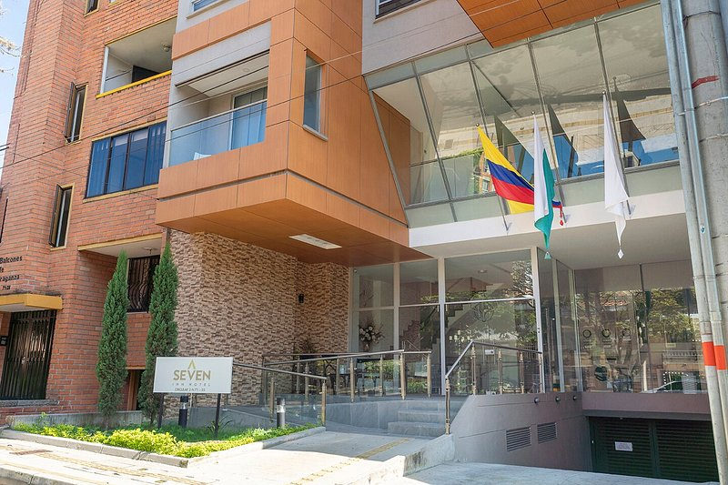

Hotel Dann Carlton
Hotel Dann Carlton Medellín es una magnífica elección para viajeros que vayan a Medellín, ya que ofrece un ambiente de lujo además de numerosos servicios diseñados para mejorar su estancia.

Hotel Dann Carlton Medellín es una magnífica elección para viajeros que vayan a Medellín, ya que ofrece un ambiente de lujo además de numerosos servicios diseñados para mejorar su estancia.

Más allá del clásico concepto hotelero, The Charlee busca recrear el estilo de vida de sus huéspedes y visitantes, ofreciéndoles un alto estándar en cada uno de sus servicios, áreas inundadas de diseño y un personal que se esfuerza por hacerlos sentir únicos.

InterContinental Movich Medellín ubicado en el sector residencial más exclusivo de la ciudad, El Poblado, y muy cerca del área comercial, industrial y de negocios de la ciudad de Medellín. A solo 35 minutos del Aeropuerto Internacional José María Córdova y a 10 minutos del aeropuerto Olaya Herrera.

Si buscas un hotel de lujo en Medellín, no te pierdas Marriott Medellin. Los puntos de referencia que hay por los alrededores, como Parroquia de San José de El Poblado (0,8 km) y Centro Cultural Moravia (2,5 km) hacen de Medellin Marriott Hotel un magnífico sitio donde alojarse en Medellín.

Situado en Medellín, a 350 metros del parque El Poblado, el HOTEL SELIS ofrece alojamiento con aire acondicionado y terraza. Este hotel de 4 estrellas ofrece servicio de habitaciones y recepción 24 horas. Este establecimiento para no fumadores se encuentra a 130 metros del Parque Lleras.

El Hotel Ayenda Seven Inn está ubicado en la ciudad de Medellín, todas las habitaciones cuentan con baño privado, kit de aseo personal, televisión y botella de agua de cortesía. Nuestro hotel está muy cerca de Universidad Pontificia Bolivariana.